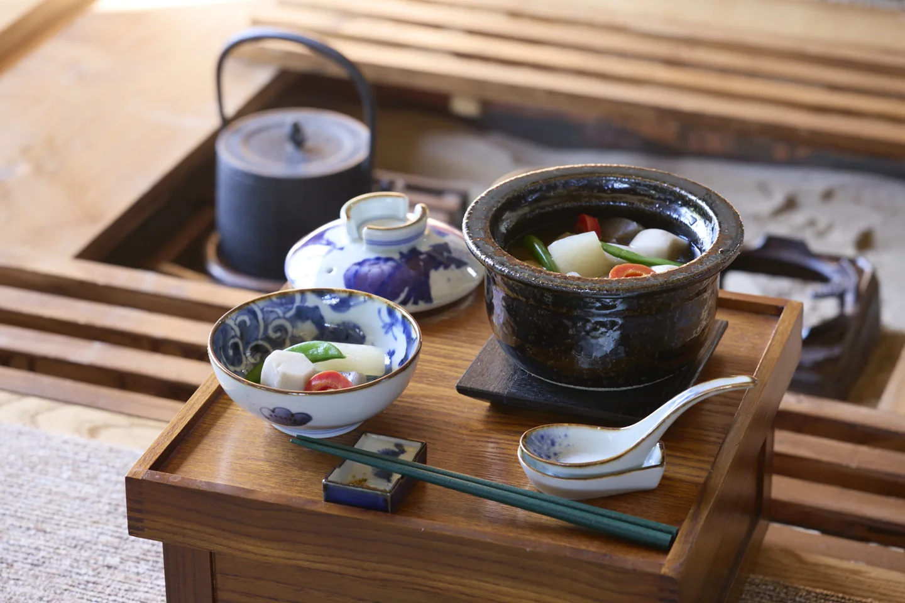

其の三
なんでん鍋とのしつらえ
時間を見る季づき

SETTING
しつらえのご紹介
鍋をそのまま食卓へ。今日はなにを炊きましょうか。
炊きたてのご飯、寄せ鍋、ことこと煮魚……。
煮えるのを待つ時間まで、ごちそうの食卓。
11,000円（税込）
ショップで購入するPRODUCT
商品のご紹介
ご飯も、鍋料理も、煮魚も。そのままうつわとして食卓に出せる、思いのままのなんでん鍋。伝統の呉須で絵付けしたレンゲと取り鉢、箸置きにもなる小さな寿司千代口を添えた、温かい食卓のセットです。
番号を押すと、うつわの説明が変わります
1
4.5寸鍋（蓋）
染付野菜絵・特
野菜を呉須で描いた蓋。蓋を取ったとき、湯気とともに中身が現れる瞬間も愉しみのひとつです。
- 電子レンジ
- ○ お使いいただけます
- 食洗機
- ○ お使いいただけます
2
なんでん鍋（身）
黒そば
ご飯も、鍋料理も、煮魚も。思いのままに使えて、そのまま食卓に出せるなんでん鍋の、黒そば。
- 電子レンジ
- ○ お使いいただけます
- 食洗機
- ○ お使いいただけます
3
4.4寸取鉢
染付乱十草 125×125×H53mm
呉須の十草を不揃いに描いた取鉢。蟹絵と並べると、柄の違いが食卓を楽しくします。
- 電子レンジ
- ○ お使いいただけます
- 食洗機
- ○ お使いいただけます
4
レンゲ(大)
染付吹墨錆 45×140×H60mm
呉須を霧のように吹きつけた吹墨に、錆の縁をあしらった大きめのレンゲ。鍋の取り分けにも、汁物にも。
- 電子レンジ
- ○ お使いいただけます
- 食洗機
- ○ お使いいただけます
5
箸千代口
染付呉須巻縁錆 40×62×H15mm
縁に錆、胴に呉須の線を巻いた小さな千代口。箸置きとして使えるほか、薬味や塩をひとつまみ添えるうつわにもなります。
- 電子レンジ
- ○ お使いいただけます
- 食洗機
- ○ お使いいただけます
6
古レンゲ(台皿)
染付錆吹墨のみ 55×82×H20mm
レンゲを休ませる小さな台皿。吹墨と錆の縁で、レンゲ(大)と揃いの趣です。
- 電子レンジ
- ○ お使いいただけます
- 食洗機
- ○ お使いいただけます

MOMENTS
愉しみ（季づき）方
煮える音、蓋を開けた瞬間の湯気。待つ時間まで愉しめる鍋です。そのまま食卓に出せるので、鍋そのものがうつわになります。レンゲと取り鉢の藍色が、どんな料理も引き締めます。
季節の愉しみ方
- 春
- 鯛めしや、あさりの酒蒸しを。
- 夏
- 冷やした煮びたしを、鍋ごと食卓へ。
- 秋
- 栗ご飯や、秋刀魚の煮付けを。
- 冬
- 寄せ鍋のあとは、雑炊まで。
商品一覧
商品の内訳（6点）
- 4.5寸鍋（蓋） 染付野菜絵・特
- なんでん鍋（身） 黒そば
- 4.4寸取鉢 染付乱十草
- レンゲ(大) 染付吹墨錆
- 箸千代口 染付呉須巻縁錆
- 古レンゲ(台皿) 染付錆吹墨のみ
お手入れの仕方
○お使いいただけます×お控えください
| 商品 | 電子レンジ | 食洗機 |
|---|---|---|
| 4.5寸鍋（蓋） 染付野菜絵・特 | ○ | ○ |
| なんでん鍋（身） 黒そば | ○ | ○ |
| 4.4寸取鉢 染付乱十草 | ○ | ○ |
| レンゲ(大) 染付吹墨錆 | ○ | ○ |
| 箸千代口 染付呉須巻縁錆 | ○ | ○ |
| 古レンゲ(台皿) 染付錆吹墨のみ | ○ | ○ |
食洗機が×の商品は、やさしく手洗いいただくと、長くお使いいただけます。
六つのしつらえの、三つめ